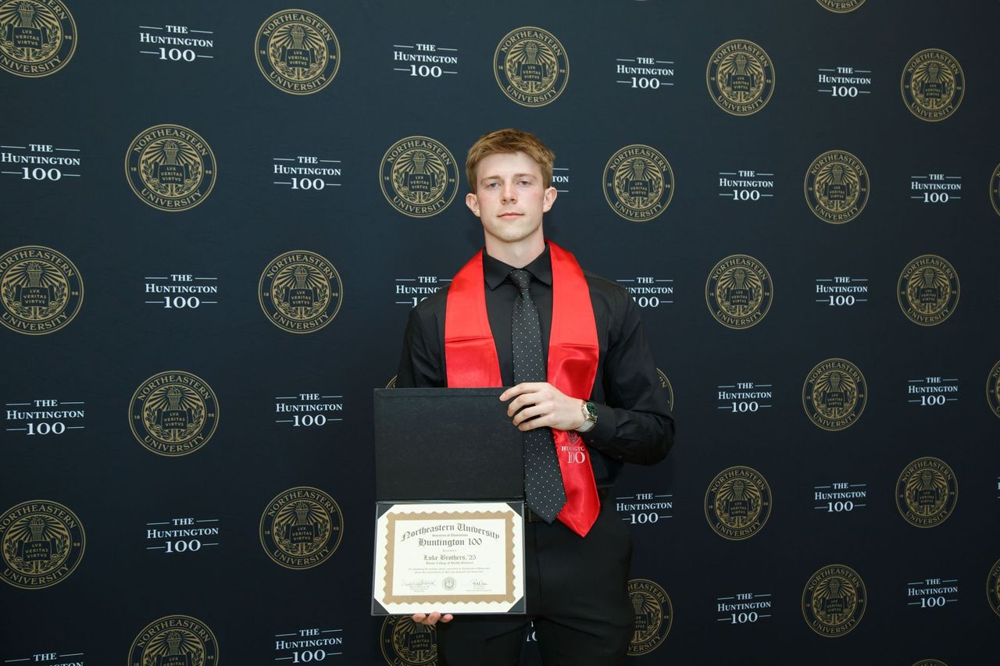

More About My Interests
My interests span across healthcare, research, and athletics. I’ve had the privilege of working with leading institutions, focusing on innovative ways to improve healthcare delivery. I helped organize an 8-hub global hackathon at the Harvard Health Systems Innovation Lab, that brought together experts and innovators to create new solutions in cancer, diabetes, and mental health. Additionally, I've been working on a paper centered on high-value health systems, contributing to discussions on improving care quality and cost-effectiveness, while evaluating the strides G20+ nations have made towards this goal.
I also hold a research position at the University of New South Wales, where I am conducting research on care transition, focusing on improving the continuum of care for patients moving between pediatric and adult care settings. This experience has fueled my passion for data-driven healthcare solutions and working on globally on healthcare issues.
Outside of my academic pursuits, I am a dedicated soccer coach, where I find fulfillment in mentoring young athletes. I am currently the head coach of a 4th grade boys soccer team where we travel around Boston for games. I spend about 15 hours a week planning sessions, coaching games, and supporting each player. I am also training for a Half Ironman, which has taught me the importance of resilience, discipline, and balance in life. My life gets busy, but that's the way I like it!
Topics I Explore
- Healthcare Innovation and Digital Health
- High-Value Health Systems
- Care Transition Research
- Data Science and Public Health
- Soccer Coaching and Triathlon Training